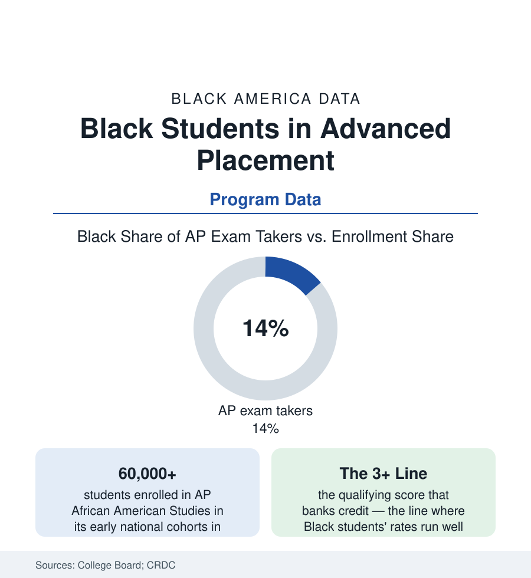

Black Education
Black Students in Advanced Placement: More Seats, and the Score Gap at the Door
Black students now take AP exams at roughly their share of enrollment — the access fight's progress is real. The qualifying-score gap is the frontier the data point to next.

The access era's headline is genuinely good: Black students, about fifteen percent of the nation's public school enrollment in the federal data, now sit for Advanced Placement exams at close to that share in the College Board's recent reporting — the product of two decades of fee waivers, open-enrollment AP policies, and the deliberate recruitment of the gifted file's missed students. The frontier has moved downstream: to the qualifying score of three or better that converts the seat into college credit, and to which courses fill the seats. This article reads both tables.
The Seat Table: Which Courses, Whose Schools
The course-level data refine the access story: Black AP participation concentrates in the humanities and social sciences (the English, history, and government exams' Black shares running at or above the enrollment share in the College Board's subject tables) and thins through the calculus and physics sequence (the STEM file's upstream arithmetic — the school that never offered the prerequisite cannot fill the seat, the CRDC's course-offering map again the upstream document), with computer science the engineered exception the access programs built deliberately. The school-level distribution matters as much as the student's: AP breadth itself is a school resource (the median school's catalog against the affluent suburb's thirty-course menu in the CRDC data), the rural Black South's thin-catalog problem compounding the distance file, and the exam-fee architecture (the federal and state subsidy programs that made the seat free in the high-poverty school — the policy the participation surge is substantially built on, and a budget line whose fragility the state data periodically demonstrate). The dual-enrollment file sits beside this one as the access era's other door — the credit banked at the community college without the single-exam gate, the two systems' Black enrollments compared in the states that run both.
The Score Table: Where the Credit Actually Lives
The qualifying-score data are the frontier in numbers: Black test-takers earn scores of three or higher at rates well below the overall — roughly a third against roughly three-fifths in the recent cycles' aggregate shape — with the subject spread wide (the humanities' rates nearer, the calculus and physics rates the tail of the tail), and the score-meaning debate attached (the College Board's validity studies — the qualifying score predicting college success in the course — against the critics' reading of the gap as the K-12 preparation file arriving at a single morning's exam). The consequences are priced in the credit data: the AP score is money (the credit hour not purchased, the placement gained) and the score gap therefore compounds into the debt file's first page — the student who sat, passed the class, and banked nothing arriving at college beside the classmate who banked a semester. The intervention literature is unusually concrete about the middle: the preparation programs with measured score effects (the National Math and Science Initiative's school model — its published gains largest for Black students in its partner schools — the teacher-training and mock-exam infrastructure the affluent school buys by default), the PSAT-identification systems routing the overlooked qualifier into the seat (the potential-versus-enrollment audits), and the course-grade divergence the researchers flag (the A in the AP class beside the 2 on its exam — the rigor honesty problem the score, for all its harshness, exists to audit).
AP African American Studies: The Course as Data
The newest row in the file is a course: AP African American Studies — developed with the field's scholars, piloted from 2022, launched nationally in the recent cycles with enrollments reported in the tens of thousands — the first Advanced Placement built on the Black intellectual tradition, its framework running from African kingdoms through the freedom movements to the contemporary Black studies canon. Its data are young and already instructive: the demand (enrollments outrunning the pilot's projections in the Board's reporting, the student interest surveys showing the course recruiting students new to AP entirely — the access table's most interesting cell), the political file (the state-level rejections and reviews that made the course a headline — Florida's refusal the loudest, the framework revisions the Board published between pilot and launch read by every side as concession or craft), and the score data of its first national cohorts (to be read, as they publish, against this article's two tables: who sat, and what the sitting banked). Whatever the fights around it, the course marks the curriculum file's furthest reach into the canon question — a college-credit door whose subject is the people walking through it.
Reading the AP Data
The access fight is substantially won at the door and substantially open at the score line: that is this file's whole shape, and it is the honest shape of progress in the education data — each solved table revealing the next one downstream. The seat without the score is an invitation; the score is the credit; the credit is the money. The College Board publishes both tables every year, and the distance between them is the work.
More in Black Education
Black Educational Attainment: High School Parity, the College Gap
About 89 percent of Black adults hold a high school diploma and one in four holds a bachelor's degree or higher — the attainment ladder, the college completion gap, and the generational trend.
Historically Black Colleges and Universities: Enrollment and Degrees
More than 100 HBCUs enroll roughly 290,000 students and award about one in six Black bachelor's degrees — an outsized share from a small sector. The federal education data.
Black College Enrollment: 2.4 Million Students
About 2.4 million Black students are enrolled in American colleges — nearly two-thirds of them women. The NCES enrollment data by sector, level, and trend.
Source: College Board AP Program Results and AP African American Studies course records; U.S. Department of Education Civil Rights Data Collection; Education Trust analyses.